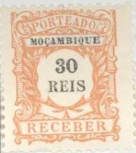

(Reduced sizes, left forgery, right genuine stamp)
Return To Catalogue - Mozambique
Note: on my website many of the
pictures can not be seen! They are of course present in the
catalogue;
contact me if you want to purchase the catalogue.

Value in 'REIS' 5 r green 10 r black 20 r brown 30 r orange 50 r brown 60 r brown 100 r lilac 130 r blue 200 r red 500 r violet
These stamps have perforation 11 1/2.
Value of the stamps |
|||
vc = very common c = common * = not so common ** = uncommon |
*** = very uncommon R = rare RR = very rare RRR = extremely rare |
||
| Value | Unused | Used | Remarks |
| 5 r | * | * | |
| 10 r | * | * | |
| 20 r | * | * | |
| 30 r | * | * | |
| 50 r | ** | ** | |
| 60 r | ** | ** | |
| 100 r | *** | *** | |
| 130 r | ** | ** | |
| 200 r | ** | *** | |
| 500 r | *** | *** | |
Forgeries exist of these stamps (see pictures above, I have seen the values 20 r, 50 r, 60 r, 130 r, 200 r and 500 r, but probably all values were forged). The easiest way to recognize these forgeries is to compare the ornament above the last 'R' of 'RECEBER'; in the forgery it is not nicely done:
(Reduced sizes, left forgery, right genuine stamp)
Overprinted 'REPUBLICA' in red or green (200 r) (1911)
5 r green 10 r black 20 r brown 30 r orange 50 r brown 60 r brown 100 r lilac 130 r blue 200 r red 500 r violet
Value of the stamps |
|||
vc = very common c = common * = not so common ** = uncommon |
*** = very uncommon R = rare RR = very rare RRR = extremely rare |
||
| Value | Unused | Used | Remarks |
| With general broad 'REPUBLICA' overprint | |||
| 5 r | * | * | |
| 10 r | * | * | |
| 20 r | * | * | |
| 30 r | * | * | |
| 50 r | * | * | |
| 60 r | * | * | |
| 100 r | * | * | |
| 130 r | * | * | |
| 200 r | * | * | |
| 500 r | * | * | |
| With local 'REPUBLICA' overprint | |||
| 5 r | ** | ** | |
| 10 r | *** | *** | |
| 20 r | RR | RR | |
| 30 r | *** | *** | |
| 50 r | RR | RR | |
| 60 r | RR | RR | |
| 100 r | RR | RR | |
| 130 r | *** | *** | |
| 200 r | *** | *** | |
| 500 r | *** | *** | |
Value in cents (1917)
1/2 c green 1 c grey 2 c brown 3 c orange 5 c brown 6 c brown 10 c lilac 13 c blue 20 c red 50 c grey
Value of the stamps |
|||
vc = very common c = common * = not so common ** = uncommon |
*** = very uncommon R = rare RR = very rare RRR = extremely rare |
||
| Value | Unused | Used | Remarks |
| 1/2 c | vc | c | |
| 1 c | vc | c | |
| 2 c | vc | c | |
| 3 c | c | c | |
| 5 c | c | c | |
| 6 c | c | c | |
| 10 c | c | c | |
| 13 c | c | c | |
| 20 c | c | c | |
| 50 c | * | c | |
Used as a postage stamp, overprinted 'CORREIOS' and red bars (1929)
50 c lilac and black
Value of the stamps |
|||
vc = very common c = common * = not so common ** = uncommon |
*** = very uncommon R = rare RR = very rare RRR = extremely rare |
||
| Value | Unused | Used | Remarks |
| 50 c | * | * | |
15 c brown (portrait of Pombal) 15 c brown (Pombal shows rebuilding plan) 15 c brown (statue) With additional inscription 'MULTA' (postage due) 30 c brown (portrait of Pombal) 30 c brown (Pombal shows rebuilding plan) 30 c brown (statue)
Many Portuguese colonies also issued similar stamps (in other colours). Click here for more information.
With overprint Nyassa, for use in Nyassa
40 c blue and brown (value in black) 40 c red and violet (value in black, 1930) 40 c green and violet (value in black, 1931) 40 c light brown and red (value in black, 1932) 40 c green and red 40 c orange and blue 40 c black and blue 40 c green and brown 40 c yellow and black 40 c brown and black (1939?)
50 c red and black
Inscription 'COLONIA DE MOCAMBIQUE' $50 red and black $50 blue and black $50 lilac and black (two shades seem to exist) $50 brown and black (two shades seem to exist) $50 olive and black $50 blue and black $50 green and black Inscription 'PROVINCIA DE MOCAMBIQUE' $50 orange and black $50 green and black $50 brown and black $50 lilac and black Surcharged $30 on $50 brown and black
With no overprint black and yellow With overprint and value $40 black and yellow (value and 'CORREIOS' in black) $50 black and yellow (value and 'CORREIOS' in red) $60 black and yellow (value and 'CORREIOS' in violet) $80 black and yellow (value and 'CORREIOS' in brown) 1$00 black and yellow (value and 'CORREIOS' in blue) 2$00 black and yellow (value and 'CORREIOS' in green) '5 c.' orange and yellow (value and 'CORREIOS' in black) '10 c.' green and yellow (value and 'CORREIOS' in black) '20 c.' grey and yellow (value and 'CORREIOS' in black) '30 c.' blue and yellow (value and 'CORREIOS' in black) '40 c.' violet and yellow (value and 'CORREIOS' in black) '50 c.' red and yellow (value and 'CORREIOS' in black) '60 c.' brown and yellow (value and 'CORREIOS' in black) '80 c.' blue and yellow (value and 'CORREIOS' in black) '1$00' green and yellow (value and 'CORREIOS' in black) '2$00' light-brown and yellow (value and 'CORREIOS' in black) '50 CENTAVOS' black and yellow (value in black, no 'CORREIOS')
With value and overprint 'CORREIOS' 5 c green and yellow 10 c blue and yellow 20 c grey and yellow 30 c red and yellow 40 c brown and yellow 50 c orange and yellow 60 c red-brown and yellow 80 c dark brown and yellow 1 E black and yellow 2 E red and yellow With no overprint and no value green and yellow blue and yellow grey and yellow red and yellow brown and yellow orange and yellow red-brown and yellow dark brown and yellow black and yellow red and yellow
Inscription 'CABO DELGADO PROVINCIA DE MOCAMBIQUE'

10 r red 20 r violet 50 r green Overprinted 'Provisorio' and value in black '5 REIS.' on 10 r red '75 REIS.' on 20 r violet '100 REIS.' on 50 r green
Stamps - Selos - Briefmarken - Timbres-Poste - Postzegels - Francobolli - Estampillas

{kind=link}